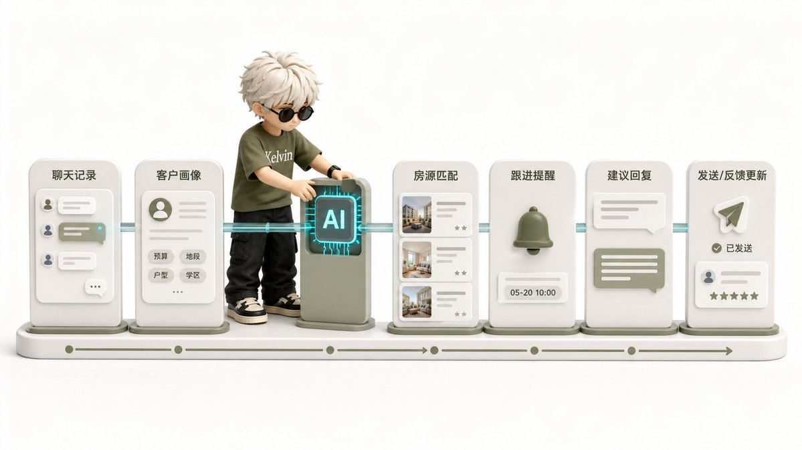
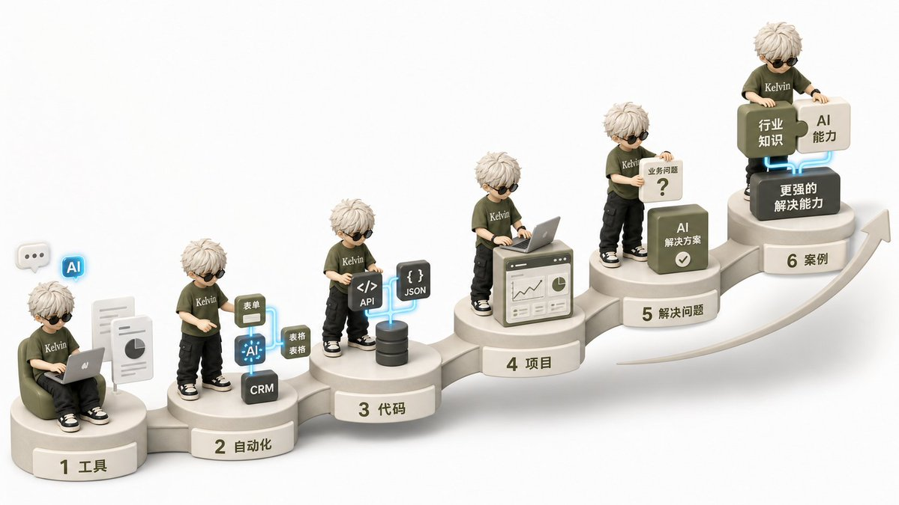

FORWARD DEPLOYED ENGINEER
FDE 到底
做什么？
不是交付软件，而是让 AI 进入业务并对结果负责
THE LAST MILE
难在最后一公里
企业缺的通常不是模型，而是可用的生产系统
FEATURE VS. PROBLEM
功能，还是问题？
THE DELIVERY LOOP
五步落地
Demo 能跑，不等于生产环境能跑
THREE CORE ABILITIES
核心不是全能
01 · 懂业务
02 · 懂 AI
03 · 能落地
离客户最近的工程师，离工程最近的业务解决者
WORKED EXAMPLE
AI 进入整个流程

聊天 → 画像 → 房源 → 跟进 → 反馈更新
不只是生成一句销售话术
ROADMAP FOR EVERYONE
普通人怎么上车？

不要从模型原理开始，从解决问题开始
工具 → 自动化 → 代码
↓
真实项目 → 行业能力
FROM DEMO TO OUTCOME
别被 Engineer
吓住
看起来能用
→
真的能用
真正稀缺的，是把 AI 变成业务结果的人
来源：Kelvin @ai_Goge · X Article
FDE 负责把 AI 塞进真实业务，并确保它能出结果
理解业务、设计方案、做原型、Eval 验证、正式上线